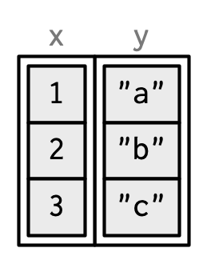

Chapter 3 Vectors
3.1 Introduction
이 Chapter에서는 R의 기본 데이터 타입들 중 가장 중요한, 벡터에 대해 이야기하려 합니다. 아마 당신은 여러 종류의 벡터들을 이미 사용해왔겠지만, 아마 그것들이 서로 어떤 연관성이 있는지에 대해서는 깊게 생각해보지 않았을 겁니다. 이번 Chapter에서 모든 벡터 타입들을 너무 자세히 다루지는 않겠지만, 이 타입들이 전체적으로 어떻게 들어맞는지 보여드리겠습니다. 만약 더 자세히 알고 싶다면, R 문서를 찾아보시면 되겠습니다.
벡터는 두가지 맛이 있는데, 원자(atomic) 벡터와 리스트입니다. 이들은 가지고 있는 원소 타입에 차이가 있는데, 원자 벡터는 모든 원소가 반드시 같은 타입이어야만 하고, 리스트는 다른 타입의 원소들을 가질 수 있습니다. 벡터는 아니지만, NULL도 벡터와 밀접히 관련되어 있고, 종종 길이가 0인 일반 벡터의 역할을 하기도 합니다. 이 다이어그램이 기본적인 관계들을 표현해주고 있습니다. Chapter가 진행됨에 따라 다이어그램을 확장해보겠습니다.

모든 벡터는 또한 _특성(attribute)_를 가질 수 있는데, 이름이 붙은 임의의 메타데이터라고 볼 수 있습니다. 특성 중 두 개가 특별히 중요합니다. 차원(dimension) 특성은 벡터를 행렬(matrices)이나 배열(array)로 바꿔주고, 클래스(class) 특성은 S3 객체 시스템을 강화합니다. S3를 어떻게 사용하는 지는 Chapter 13에서 배우겠지만, 여기에서도 가장 중요한 S3 벡터인 팩터(factors), 날짜 시간(date and times), 데이터 프레임(data frames), 그리고 티블(tibbles)에 대해 배울 것입니다. 행렬이나 데이터 프레임 같은 2D 구조들은 딱히 벡터 같다고 생각되지 않을 수 있는데, 왜 R이 이들을 벡터로 간주하는지도 배우게 됩니다.
Quiz
이 짧은 퀴즈를 풀어보고 이 Chapter를 읽을 필요가 있는지 확인해 봅시다. 만약 답이 금방 떠오른다면, 이 Chapter를 편안히 넘겨도 됩니다. Section 3.8에서 답을 확인해보세요.
네 가지 일반적인 유형의 atomic 벡터는 무엇입니까? 두 가지 희귀한 유형은 무엇인가요?
특성(attributes)가 무엇입니까? 어떻게 구할 수 있고 설정할 수 있습니까?
리스트는 atomic 벡터와 어떻게 다른가요? 또 행렬은 데이터 프레임과 어떻게 다릅니까?
행렬인 리스트를 가질 수 있습니까? 데이터 프레임이 행렬을 열로 가질 수 있습니까?
티블(tibbles)는 데이터 프레임과 어떻게 다르게 동작합니까?
Outline
Section 3.2에서는 논리형(logical), 정수형(integer), 실수형(double), 문자형(character)이라는 atomic 벡터들을 소개하겠습니다. 이는 R의 가장 간단한 데이터 구조들입니다.
Section 3.3에서는 R의 유연한 메타데이터 설명서인 특성(attributes)를 논합니다. 가장 중요한 특성들은 이름(names), 차원(dimensions), 그리고 클래스(class)입니다.
Section 3.4는 atomic 벡터와 특별한 특성이 결합되어 만들어진 중요한 벡터 타입들에 대해 다룹니다. 이는 팩터(factors), 날짜(dates), 날짜-시간(date-times), 그리고 지속시간(durations)를 포함합니다.
Section 3.5에선 리스트를 깊게 살펴봅니다. 리스트는 atomic 벡터와 매우 비슷하지만, 한가지 중요한 차이가 있습니다. 바로 리스트는 다른 리스트를 포함해 모든 데이터 타입을 원소로 가질 수 있다는 것입니다. 이 특징은 계층적인 데이터를 표현하기 적합하게 만들어줍니다.
Section 3.6은 데이터 프레임과 티블에 대해 가르쳐줍니다. 이들은 직사각형 모양 데이터를 나타낼 때 사용됩니다. 또한 리스트와 행렬의 특징이 결합되어 있어, 통계적 데이터를 다루는 데에도 매우 적합한 구조입니다.
3.2 Atomic vectors
논리형(logical), 정수형(integer), 실수형(double), 문자형(character)은 atomic 벡터의 네 가지 기본 유형입니다. 정수형과 실수형 벡터들은 합쳐서 숫자형(numeric) 벡터로도 알려져 있습니다. 복소수형(complex)과 Raw 타입은 두 가지 희귀 유형입니다. 이들을 더 깊게 다루지는 않으려고 하는데, 복소수형은 통계학에서는 거의 쓸 일이 없고, raw 벡터는 binary 데이터를 다룰 때만 필요한 특수한 유형이기 때문입니다.

3.2.1 Scalars
각 네 가지 기본 타입들은 개별 값을 생성하기 위해, 일명 _scalar_라고 하는 특별한 문법을 갖고 있습니다.
논리형은 풀 네임(
TRUE또는FALSE), 또는 축약 버전(T또는F)으로 쓸 수 있습니다.실수형은 10진법(
0.1234), 지수표기법(1.23e4), 또는 16진법(0xcafe) 형태로 표기될 수 있습니다. 실수형에만 있는 세 가지 특별한 값이 있습니다.Inf,-Inf, 그리고NaN(not a number)인데, 이들은 부동 소수점 표준에 의해 정의된 특수한 값입니다.정수형은 실수형과 비슷하게 쓰여지지만 반드시
L를 뒤에 붙여주어야 합니다.(1234L,1e4L, 또는0xcafeL) 그리고 분수를 포함할 수 없습니다.문자형은
"("hi") 또는'('bye')로 감싸집니다. 특수한 문자들은\를 이용해 이스케이프 할 수 있는데, 자세한 내용은?Quotes에서 확인하세요.
3.2.2 Making longer vectors with c()
짧은 벡터들을 가지고 더 긴 벡터들을 만들고 싶다면, c()를 사용하세요.
lgl_var <- c(TRUE, FALSE)
int_var <- c(1L, 6L, 10L)
dbl_var <- c(1, 2.5, 4.5)
chr_var <- c("these are", "some strings")인풋값이 atomic 벡터라면, c()는 항상 다른 atomic 벡터를 만들어냅니다.
다이어그램에서 벡터들은 연결된 직사각형으로 표현했습니다. 위의 코드는 아래와 같이 표현할 수 있습니다.

typeof()를 이용해서 벡터의 타입을, length()로 길이를 확인할 수 있습니다.
3.2.3 Missing values
R은, 특수한 값인 NA(not applicable의 약자)를 이용해서 결측값이나 미지의 값을 나타냅니다. 결측값은 전염되는 성질이 있습니다. 결측값을 포함하는 대부분의 연산은 또 다른 결측값을 내놓습니다.
이 규칙에는 몇 가지 예외가 있는데, 모든 가능한 입력값에 대해 동일한 결과를 도출하는 경우에만 발생합니다.
결측치가 옮겨가는 현상 때문에 벡터 안의 결측값을 찾아내려 할 때 흔히 실수가 발생합니다.
한 결측값이 다른 것과 같은 값을 가지리란 보장이 없기 때문에, 이러한 결과는 합당하다고 볼 수 있습니다. 대신에 is.na()를 사용하면 결측의 존재를 확인할 수 있습니다.
3.2.4 Testing and coercion
일반적으로 is.*() 함수로 벡터가 주어진 타입의 것인지 _테스트_할 수 있습니다. 하지만 이 함수들은 주의해서 사용해야합니다. is.logical(), is.integer(), is.double(), 그리고 is.character()은 우리가 예상하는대로, 벡터가 문자형인지 실수형인지 정수형인지 논리형인지 확인해줍니다. is.vector(), is.atomic(), is.numeric()은 사용하지 마세요. 이들은 벡터인지 atomic 벡터인지 숫자형인지 확인하지 않습니다. 문서를 주의깊게 읽어 이들이 실제로 무엇을 하는지 알아보세요.
atomic vectors에게, 타입은 벡터 전체의 성질입니다. 모든 원소가 같은 타입을 가져야하니까요. 만약 다른 타입들을 결합하려한다면, 지정된 순서에 따라 _강제(coerced)_됩니다.
순서 : 문자형 → 실수형 → 정수형 → 논리형
예를 들어, 문자형과 정수형의 결합은 문자형이 됩니다.
Coercion은 대개 자동으로 일어납니다. 대부분의 수학 관련 함수들(+, log, abs 등)은 숫자로 강제합니다. 이런 종류의 coercion은 논리형 벡터들에 대해 특히 유용한데, TRUE는 1이 되고 FALSE는 0이 되기 때문입니다.
x <- c(FALSE, FALSE, TRUE)
as.numeric(x)
#> [1] 0 0 1
# Total number of TRUEs
sum(x)
#> [1] 1
# Proportion that are TRUE
mean(x)
#> [1] 0.333as.logical(), as.integer(), as.double(), as.character()과 같은 as.*() 함수를 사용해서 고의적으로 강제할 수 있습니다. 문자를 강제하는데 실패하는 경우 경고와 결측값이 생깁니다.
3.2.5 Exercises
raw와 complex scalar를 어떻게 만들 수 있을까요?
아래의 결과물을 예상하며 벡터 coercion에 대한 지식을 확인해보세요.
왜
1 =="1"이 참일까요? 왜-1 < FALSE는 참일까요? 왜"one" < 2는 거짓일까요?왜 디폴트
NA는 논리형 벡터일까요? 논리형 벡터의 특별한 점은 무엇인가요?(힌트:c(FALSE, NA_character_)를 생각해보세요)정확히
is.atomic(),is.numeric(),is.vector()는 무엇을 테스트하나요?
3.3 Attributes
아마 atomic 벡터 시리즈가 행렬, 배열, 팩터, 날짜-시간 데이터와 같이 많은 중요한 데이터 구조들을 포함하지 않는다는 사실을 눈치채셨을 것 같습니다. 이 타입들은 atomic 벡터에 속성(attributes)를 추가하여 구축됩니다. 이 Section에서는 속성의 기초와, 어떻게 차원(dim) 속성이 행렬과 배열을 만들어 내는지 배웁니다. 다음 Section에서 어떻게 클래스 속성이 팩터, 날짜, 날짜-시간과 같은 S3 벡터들을 만드는지 배우겠습니다.
3.3.1 Getting and setting
속성이란 객체에 메타데이터를 더해주는 이름과 값의 쌍이라고 볼 수 있습니다. 개개의 속성들은 attr()를 사용하여 검색하거나 수정할 수 있고, attributes()를 사용하여 전체를 검색하고 structure()를 사용해서 일괄 설정할 수 있습니다.
a <- 1:3
attr(a, "x") <- "abcdef"
attr(a, "x")
#> [1] "abcdef"
attr(a, "y") <- 4:6
str(attributes(a))
#> List of 2
#> $ x: chr "abcdef"
#> $ y: int [1:3] 4 5 6
# Or equivalently
a <- structure(
1:3,
x = "abcdef",
y = 4:6
)
str(attributes(a))
#> List of 2
#> $ x: chr "abcdef"
#> $ y: int [1:3] 4 5 6
속성은 일반적으로는 일시적이라고 생각해야 합니다. 예를 들어, 대부분의 속성들은 대부분의 연산에 의해 사라집니다.
일상적으로 보존되는 속성은 두가지 뿐입니다.
- 이름(names): 각 요소에 이름을 부여하는 문자형 벡터입니다.
- 차원(dim): dimensions의 약자로, 벡터를 행렬이나 배열로 만들어주는 정수형 벡터입니다.
다른 속성들을 보존하기 위해선, Chapter 13의 주제인, S3 클래스를 만들어 사용해야 합니다.
3.3.2 Names
세 가지 방식으로 벡터에 이름을 부여할 수 있습니다.
# When creating it:
x <- c(a = 1, b = 2, c = 3)
# By assigning a character vector to names()
x <- 1:3
names(x) <- c("a", "b", "c")
# Inline, with setNames():
x <- setNames(1:3, c("a", "b", "c"))attr(x, "names")는 names(x)에 비해 타이핑도 많이 해야하고 가독성이 떨어지므로 사용을 피해주세요. unname(x) 또는 names(x) <- NULL을 사용해 벡터의 이름을 제거할 수도 있습니다.
기술적으로 정확히 하기 위해, 이름이 있는 벡터 x를 그릴 때는 다음과 같이 그려야 합니다.

하지만 이름은 너무 특별하고 중요하기 때문에, 데이터의 속성 구조에 각별히 주의를 기울이지 않는 한은, 벡터에 직접 라벨을 주도록 하겠습니다.

문자를 이용한 서브 세팅의 편리를 위해, 이름은 고유해야하고 결측이 아니어야만 합니다. 하지만 이건 R이 강제하는 바는 아닙니다. 이름이 어떻게 설정되냐에 따라, 누락된 이름은 "" 또는 NA_character_이 될 수도 있습니다. 만약 모든 이름이 누락되어 있다면, names()는 NULL을 반환합니다.
3.3.3 Dimensions
dim 속성을 벡터에 추가하는 것은 벡터가 2차원 _행렬_이나 다차원 _배열_처럼 작동할 수 있게 해줍니다. 행렬과 배열은 주로 수학이나 통계학적 도구이지, 프로그래밍 도구는 아닙니다. 따라서 이들은 자주 사용되지는 않으므로 이 책에서는 간략히 다루겠습니다. 이것들의 가장 중요한 특징은 Section 4.2.3에서 다룰 다차원 세브세팅입니다.
행렬과 배열을 만들기 위해서는 matrix()와 array()를 사용하거나, dim() 형태의 할당을 사용할 수 있습니다.
# Two scalar arguments specify row and column sizes
a <- matrix(1:6, nrow = 2, ncol = 3)
a
#> [,1] [,2] [,3]
#> [1,] 1 3 5
#> [2,] 2 4 6
# One vector argument to describe all dimensions
b <- array(1:12, c(2, 3, 2))
b
#> , , 1
#>
#> [,1] [,2] [,3]
#> [1,] 1 3 5
#> [2,] 2 4 6
#>
#> , , 2
#>
#> [,1] [,2] [,3]
#> [1,] 7 9 11
#> [2,] 8 10 12
# You can also modify an object in place by setting dim()
c <- 1:6
dim(c) <- c(3, 2)
c
#> [,1] [,2]
#> [1,] 1 4
#> [2,] 2 5
#> [3,] 3 6벡터에 작동하는 많은 함수들은 행렬과 배열에도 일반화가 가능합니다.
| Vector | Matrix | Array |
|---|---|---|
names() |
rownames(), colnames() |
dimnames() |
length() |
nrow(), ncol() |
dim() |
c() |
rbind(), cbind() |
abind::abind() |
| — | t() |
aperm() |
is.null(dim(x)) |
is.matrix() |
is.array() |
dim 속성이 없는 벡터는 1차원으로 생각되지만, 실제로는 NULL 차원입니다. 하나의 행이나 열을 가지는 행렬이나, 1차원인 배열도 만들 수 있습니다. 이들은 비슷하게 출력되지만, 다르게 동작합니다. 이 차이점들은 그리 중요하진 않지만, 알아두면 함수가 이상한 결과물을 뱉는 경우에 유용할 수 있습니다.(tapply()가 빈번히 이럽디다) 뭐 여느때와 마찬가지로, str()을 이용해서 차이점을 확인할 수 있습니다.
3.3.4 Exercises
setNames()와unname()은 어떻게 구현되어 있습니까? 소스 코드를 읽어보세요.dim()이 1차원 벡터에게 적용되었을 때 무엇이 반환됩니까?NROW()나NCOL()은 언제 사용하나요?다음 세 객체를 어떻게 설명하시겠습니까?
1:5와 다른 점이 무엇인가요?
- 초기 원고에서는
structure()를 표현하기 위해 이 코드를 사용했었습니다.
하지만 이 객체를 프린트하면 comment 속성을 볼 수 없습니다. 왜일까요? 속성이 누락된 것일까요? 아니면 뭔가 특별한 것이 있는 걸까요?(힌트: help를 사용해보세요)
3.4 S3 atomic vectors
벡터의 가장 중요한 속성 중 하나는 S3 객체 시스템의 근간을 이루는 class입니다. 클래스 속성을 가지게 되면 객체가 S3 객체로 바뀝니다. 이는 제네릭(generic) 함수를 거쳤을 때, 일반적인 벡터와는 다른 행태를 보인다는 것을 의미합니다. 모든 S3 객체는 기본 타입을 기반으로 형성되고, 종종 다른 속성들에 대한 추가 정보를 저장하기도 합니다. Chapter 13에서 S3 객체 시스템에 대한 디테일과 어떻게 자신만의 S3 클래스를 만들 수 있는지 배울 것입니다.
이 Section에서는, 베이스 R에서 사용되는 네 가지 중요한 S3 벡터들에 대해 논할 것입니다.
팩터(factor) 벡터에 기록된 정해진 레벨들의 후보에서 값이 비롯되는 범주형 데이터
날짜(Date) 벡터에 기록된 날짜들(요일 등까지도)
POSIXct 벡터들에 저장된 날짜-시간들(초 아래 단위까지도)
difftime 벡터에 저장된 지속기간들

3.4.1 Factors
팩터는 사전에 정의된 값들만을 가질 수 있는 벡터입니다. 이는 범주형 데이터를 저장하는 데에 사용됩니다. 팩터는 정수형 벡터에 두가지 속성이 더해져 만들어집니다. 일반적인 정수형 벡터들과 다르게 동작하게 해주는 “팩터” class와, 허용된 값들을 정의하는 levels가 그것입니다.
x <- factor(c("a", "b", "b", "a"))
x
#> [1] a b b a
#> Levels: a b
typeof(x)
#> [1] "integer"
attributes(x)
#> $levels
#> [1] "a" "b"
#>
#> $class
#> [1] "factor"
팩터는 가능한 값 세트를 알고 있지만, 그것들이 주어진 데이터셋이 전부 존재하지는 않을때 유용합니다. 문자형 벡터와는 다르게, 팩터를 표로 만들면 관찰되지 않은 값이라고 해도 모든 카테고리의 수를 얻을 수 있습니다.
sex_char <- c("m", "m", "m")
sex_factor <- factor(sex_char, levels = c("m", "f"))
table(sex_char)
#> sex_char
#> m
#> 3
table(sex_factor)
#> sex_factor
#> m f
#> 3 0순서형(Ordered) 팩터는 팩터를 살짝 변형한 것입니다. 보통은 일반적인 팩터처럼 동작하지만, levels의 순서(low, medium, high)는 의미가 있습니다.(몇몇 모델이나 시각화 함수에서 자동으로 활용됩니다)
grade <- ordered(c("b", "b", "a", "c"), levels = c("c", "b", "a"))
grade
#> [1] b b a c
#> Levels: c < b < aBase R에서는 (read.csv(), data.frame()과 같은) 많은 기본 R 함수들이 자동으로 문자형 벡터들을 팩터로 바꿔버리기 때문에, 팩터를 매우 자주 접하게 됩니다. 하지만 이는 차선잭인데, 이러한 함수들이 모든 가능한 levels와 그들의 정확한 순서를 알 도리가 없기 때문입니다. levels는 데이터가 아닌 이론이나 실험 설계의 속성입니다. 대신에, stringAsFactors = FALSE 인자를 사용하면 이러한 현상을 제어할 수 있고, “이론적인” 데이터 지식을 활용해 손수 문자형 벡터들을 팩터로 바꿔줄 수 있습니다. 이에 대한 역사적 맥락을 더 배우고 싶다면, Roger Peng의 stringsAsFactors: An unauthorized
biography와, Thomas Lumley의 stringsAsFactors =
<sigh>를 추천합니다.
비록 팩터가 문자형 벡터처럼 생기고 동작하는 것처럼 보이지만, 정수형 벡터를 기반으로 한다는 것을 기억해야 합니다. 그러니까 이들을 문자열처럼 다룰 때는 주의하세요. gsub()나 grepl() 같은 몇몇 문자형 메소드들은 팩터를 문자열로 강제합니다. nchar()과 같은 애들은 에러를 내기도 하고, c() 같은 애들은 기저에 있는 정수형 벡터를 사용하기도 합니다. 이러한 이유로, 만약 문자열 같은 동작방식이 필요하다면, 명시적으로 팩터를 문자형 벡터로 바꿔 사용하는 것이 최선입니다.
3.4.2 Dates
날짜 벡터는 실수형(double) 벡터를 기반으로 만들어집니다. 이것들은 “Date” class 속성만을 가집니다.
클래스를 제거하면 볼 수 있는 본래의 실수값은 1970-01-01로부터 흐른 날을 의미합니다.
3.4.3 Dates-times
Base R은 날짜-시간 정보를 저장할 수 있는 두 방법을 제공합니다. POSIXct와 POSIXlt입니다. 넘나리 이상한 “POSIX”란 이름은 플랫폼 간 표준의 일원인 Portable Operating System Interface의 약자입니다. “ct”는 calendar time(C언어에서 time_t 타입)을, “lt”는 local time(C언어에서 struct tm 타입)을 의미합니다. 여기에서는 POSIXct에 초점을 맞춰보겠습니다. 왜냐하면 이것은 가장 간단하고, atomic vector를 기반으로 만들어졌으며, 데이터 프레임에서 사용하기에 가장 적절하기 때문입니다. POSIXct 벡터는 1970-01-01로부터 흐른 초 수를 표현한 실수값 위에 만들어졌습니다.
now_ct <- as.POSIXct("2018-08-01 22:00", tz = "UTC")
now_ct
#> [1] "2018-08-01 22:00:00 UTC"
typeof(now_ct)
#> [1] "double"
attributes(now_ct)
#> $class
#> [1] "POSIXct" "POSIXt"
#>
#> $tzone
#> [1] "UTC"tzone 속성은 날짜-시간이 어떻게 포맷된 것인지를 제어합니다. 벡터에 의해 표현된 시간의 순간을 제어하진 않습니다. 자정이면 시간이 출력되지 않는다는 것은 알아두세요.
structure(now_ct, tzone = "Asia/Tokyo")
#> [1] "2018-08-02 07:00:00 JST"
structure(now_ct, tzone = "America/New_York")
#> [1] "2018-08-01 18:00:00 EDT"
structure(now_ct, tzone = "Australia/Lord_Howe")
#> [1] "2018-08-02 08:30:00 +1030"
structure(now_ct, tzone = "Europe/Paris")
#> [1] "2018-08-02 CEST"3.4.4 Durations
날짜나 날짜-시간 데이터 쌍들 사이의 시간 간격을 의미하는 Durations는 시간차(difftimes) 안에 저장됩니다. Difftimes는 실수형 데이터로 구성되고, 정수가 어떻게 해석되어야 하는지 결정하는 units 속성을 가집니다.
one_week_1 <- as.difftime(1, units = "weeks")
one_week_1
#> Time difference of 1 weeks
typeof(one_week_1)
#> [1] "double"
attributes(one_week_1)
#> $class
#> [1] "difftime"
#>
#> $units
#> [1] "weeks"
one_week_2 <- as.difftime(7, units = "days")
one_week_2
#> Time difference of 7 days
typeof(one_week_2)
#> [1] "double"
attributes(one_week_2)
#> $class
#> [1] "difftime"
#>
#> $units
#> [1] "days"3.4.5 Exercises
table()은 어떤 종류의 객체를 반환합니까? 또한 무슨 타입이며, 어떤 속성들을 가집니까? 당신이 더 많은 변수를 표로 만들면 차원은 어떻게 변합니까?levels를 수정하면 팩터에 무슨 일이 발생합니까?
- 이 코드는 무엇을 합니까?
f2와f3는f1과 어떻게 다른가요?
3.5 Lists
리스트는 atomic 벡터에 비해 더 복잡합니다. 각 원소는 벡터 뿐 아니라 어떤 타입이든 될 수 있습니다. 기술적으로 엄밀히 따지면, 리스트의 각 원소들은 사실 같은 타입이긴합니다. Section 2.3.3에서 보았듯이, 각 원소들은 다른 객체(어떤 타입이든 될 수 있는)에 대한 _참조_이기 때문입니다.
3.5.1 Creating
list()로 리스트를 만들 수 있습니다.
l1 <- list(
1:3,
"a",
c(TRUE, FALSE, TRUE),
c(2.3, 5.9)
)
typeof(l1)
#> [1] "list"
str(l1)
#> List of 4
#> $ : int [1:3] 1 2 3
#> $ : chr "a"
#> $ : logi [1:3] TRUE FALSE TRUE
#> $ : num [1:2] 2.3 5.9리스트의 원소는 참조들이라서, 리스트를 만들 때에는 컴포넌트들을 리스트에 복사하지 않아도 됩니다. 따라서 리스트의 총 크기는 예상했던 것보다 아마 작을 것입니다.
lobstr::obj_size(mtcars)
#> 7,208 B
l2 <- list(mtcars, mtcars, mtcars, mtcars)
lobstr::obj_size(l2)
#> 7,288 B리스트는 복합적인 객체들을 담을 수 있기 때문에, 모든 리스트에 적용될 수 있는 하나의 시각적인 표현법을 고르기는 불가능합니다. 계층을 표현하기 위해 색을 이용하여, 벡터처럼 리스트를 표현해보도록 하겠습니다.

리스트는 가끔 재귀(reculsive) 벡터라고 불리기도 하는데, 리스트는 다른 리스트를 담을 수 있기 때문입니다. 이런 부분이 리스트와 atomic 벡터가 근본적으로 다른 지점입니다.

c()는 여러 리스트들을 하나로 합쳐줍니다. 만약 atomic 벡터와 리스트의 결합이 주어진다면, c()는 이들을 결합하기 전에 벡터들을 리스트로 강제합니다. list()와 c()의 결과물을 비교해보세요.
l4 <- list(list(1, 2), c(3, 4))
l5 <- c(list(1, 2), c(3, 4))
str(l4)
#> List of 2
#> $ :List of 2
#> ..$ : num 1
#> ..$ : num 2
#> $ : num [1:2] 3 4
str(l5)
#> List of 4
#> $ : num 1
#> $ : num 2
#> $ : num 3
#> $ : num 4
3.5.2 Testing and coercion
리스트의 typeof()는 list입니다. is.list()를 이용해서 리스트인지 테스트할 수 있고, as.list()를 이용해서 리스트로 강제할 수 있습니다.
list(1:3)
#> [[1]]
#> [1] 1 2 3
as.list(1:3)
#> [[1]]
#> [1] 1
#>
#> [[2]]
#> [1] 2
#>
#> [[3]]
#> [1] 3unlist()를 사용하면 리스트를 atomic 벡터로 바꿀 수 있습니다. 이 결과에 대한 룰은 복잡하며, 잘 문서화 되어있지도 않고, c()의 결과물가 항상 일치하지도 않습니다.
3.5.3 Matrices and arrays
atomic 벡터에서는 차원 속성이 행렬을 만드는 데 흔히 사용됩니다. 리스트에서는 차원 속성을 이용해 리스트-행렬이나 리스트-배열을 만들 수 있습니다.
l <- list(1:3, "a", TRUE, 1.0)
dim(l) <- c(2, 2)
l
#> [,1] [,2]
#> [1,] Integer,3 TRUE
#> [2,] "a" 1
l[[1, 1]]
#> [1] 1 2 3이러한 데이터 구조들은 상대적으로 난해해보이지만, 객체들을 grid-like 구조로 나열하고 싶을 때 유용합니다. 예를 들어, 시공간 grid에 맞추어 모델을 돌리고 싶을 때, 모델들을 grid 구조에 맞는 3D 배열에 저장하는 것이 더 직관적일 수 있습니다.
3.5.4 Exercises
리스트가 atomic 벡터와 다른 모든 방식을 나열해보세요.
리스트를 atomic 벡터로 바꾸기 위해 왜
unlist()를 사용할 필요가 있을까요? 왜as.vector()는 작동하지 않을까요?날짜와 날짜-시간 데이터를 하나의 벡터로 합칠 때,
c()와unlist()를 비교해보세요.
3.6 Data frames and tibbles
리스트를 기반으로 만들어진 가장 중요한 두 S3 벡터는, 데이터 프레임과 티블(tibbles)입니다.

R로 데이터 분석을 한다면, 데이터 프레임을 이용하게 될 것입니다. 데이터 프레임은 (열)names, row.names() 속성과 “data.frame” 클래스를 가지는 이름 붙여진 리스트입니다.
df1 <- data.frame(x = 1:3, y = letters[1:3])
typeof(df1)
#> [1] "list"
attributes(df1)
#> $names
#> [1] "x" "y"
#>
#> $class
#> [1] "data.frame"
#>
#> $row.names
#> [1] 1 2 3보통의 리스트와는 다르게, 데이터 프레임에는 추가적인 제한 사항이 있는데, 그것이 가지는 벡터들의 길이가 반드시 같아야 한다는 것입니다. 이 점이 데이터 프레임이 직사각형 구조를 띄게 하고, 이들이 행렬과 리스트의 성질을 동시에 가지는 것을 설명해줍니다.
데이터 프레임은
rownames()와colnames()를 갖습니다. 데이터 프레임의names()는 열 이름을 의미합니다.데이터 프레임은
nrow()와ncol()를 갖습니다. 데이터 프레임의length()는 열의 수를 뜻합니다.
데이터 프레임은 R에서 가장 커다랗고 중요한 아이디어 중 하나입니다. 그리고 R을 다른 프로그래밍 언어들과 차별되게 만들어 준 것들 중 하나이죠.
하지만 이것이 만들어진지 20년이 넘게 흘러, 사람들이 R을 사용하는 방식이 변했고, 데이터 프레임이 만들어진 당시에는 괜찮았던 것들이 지금은 문제를 일으키기도 합니다.
이런 문제들이 데이터 프레임을 현대적으로 재디자인한 티블(tibble)의 창조를 이끌었습니다. Tibbles are designed to be (as much as possible) drop-in replacements for data frames that fix those frustrations. 주요한 차이점을 요약하는 간결하고 재미있는 표현은, 티블은 ’게으르(lazy)’고 ’거칠다(surly)’는 것입니다. 이번 Section을 따라가며 무슨 의미인지 보게 될 것입니다.
티블은 티블 패키지에 의해 제공되고 데이터 프레임과 동일한 구조를 공유합니다. 유일한 차이점은 클래스 벡터가 더 길고, tbl_df를 포함하고 있다는 점입니다. 이를 통해 티블이 중요한 방식으로 다르게 동작할 있습니다. 아래에서 더 알아보겠습니다.
library(tibble)
df2 <- tibble(x = 1:3, y = letters[1:3])
typeof(df2)
#> [1] "list"
attributes(df2)
#> $names
#> [1] "x" "y"
#>
#> $row.names
#> [1] 1 2 3
#>
#> $class
#> [1] "tbl_df" "tbl" "data.frame"3.6.1 Creating
data.frame()에 이름 벡터 쌍을 넣어서 데이터 프레임을 생성할 수 있습니다.
df <- data.frame(
x = 1:3,
y = c("a", "b", "c")
)
str(df)
#> 'data.frame': 3 obs. of 2 variables:
#> $ x: int 1 2 3
#> $ y: Factor w/ 3 levels "a","b","c": 1 2 3디폴트로 문자열을 팩터로 바꿔버리는 것에 주의하세요. stringAsFactors = FALSE를 사용해서 이런 일을 방지하고 문자형 벡터를 문자형 벡터로 보존하세요.
df1 <- data.frame(
x = 1:3,
y = c("a", "b", "c"),
stringsAsFactors = FALSE
)
str(df1)
#> 'data.frame': 3 obs. of 2 variables:
#> $ x: int 1 2 3
#> $ y: chr "a" "b" "c"티블을 만드는 것은 데이터 프레임을 만드는 것과 비슷합니다. 둘의 차이점은 티블은 절대 입력값을 강제하지 않는다는 것이죠.(이것이 티블을 ‘게으르게’ 만드는 특징 중 하나입니다)
df2 <- tibble(
x = 1:3,
y = c("a", "b", "c")
)
str(df2)
#> Classes 'tbl_df', 'tbl' and 'data.frame': 3 obs. of 2 variables:
#> $ x: int 1 2 3
#> $ y: chr "a" "b" "c"또한 데이터 프레임은 자동으로 non-syntactic한 이름을 바꿔버리지만(check.names = FALSE를 하지 않는한), 티블은 그렇게 하지 않습니다.(대신 non-syntactic한 이름을 `으로 감싸줍니다)
데이터 프레임(또는 티블)은 반드시 모든 원소가 같은 길이를 가져야 하지만, data.frame()과 tibble()은 짧은 입력값을 재활용합니다. 하지만 데이터 프레임이 자동으로 정수배로 열들을 재활용하는 반면, 티블은 오직 길이 1짜리 벡터들만 재활용합니다.
data.frame(x = 1:4, y = 1:2)
#> x y
#> 1 1 1
#> 2 2 2
#> 3 3 1
#> 4 4 2
data.frame(x = 1:4, y = 1:3)
#> Error in data.frame(x = 1:4, y = 1:3): arguments imply differing number of
#> rows: 4, 3
tibble(x = 1:4, y = 1)
#> # A tibble: 4 x 2
#> x y
#> <int> <dbl>
#> 1 1 1
#> 2 2 1
#> 3 3 1
#> 4 4 1
tibble(x = 1:4, y = 1:2)
#> Error: Tibble columns must have consistent lengths, only values of length one
#> are recycled:
#> * Length 2: Column `y`
#> * Length 4: Column `x`마지막 차이점은, tibble()은 티블을 생성하는 도중에 만들어진 변수를 참조할 수 있다는 것입니다.
(입력값은 왼쪽에서 오른쪽으로 계산됩니다.)
데이터 프레임과 티블을 그릴 때, 속성 같은 내부적 디테일들에 집중하기 보단,

이름 붙인 리스트와 같은 방식으로 표현하겠습니다. 대신 이들의 컬럼 구조를 강조해주겠습니다.

3.6.2 Row names
데이터 프레임에서는 각 행에 이름을 붙일 수 있습니다. 문자형 벡터는 고유한 값들만을 담아야합니다.
df3 <- data.frame(
age = c(35, 27, 18),
hair = c("blond", "brown", "black"),
row.names = c("Bob", "Susan", "Sam")
)
df3
#> age hair
#> Bob 35 blond
#> Susan 27 brown
#> Sam 18 blackrownames()로 행 이름을 확인하거나 설정할 수 있고, 이를 행을 추출할 때 사용할 수 있습니다.
데이터 프레임을 행렬과 같은 2차원 구조라고 생각하면 행 이름은 자연스운 것입니다. 열(변수)가 이름이 있으니, 행(관측치)도 있어야 하는게 당연해보이죠. 행렬은 대개 숫자형입니다. 때문에 문자 레이블을 저장할 장소를 마련하는게 중요하죠. 하지만 행렬로부터 이렇게 유추하는 것은 오해의 소지가 있습니다. 왜냐하면 행렬은 데이터 프레임에겐 없는 중요한 특징을 갖고 있기 때문입니다. 바로 ’전치(transpose)’가 가능하단 점입니다. 행렬에선 행과 열이 상호 교환가능합니다. 또 행렬을 전치시키면 다른 행렬이 됩니다.(다시 전치시키면 원래의 행렬을 얻게 되겠죠) 하지만 데이터 프레임은 행과 열이 교환가능하지 않습니다. 데이터 프레임을 전치시키면 데이터 프레임이 아니게 됩니다.
행 이름은 사용하지 않는 것이 바람직한데, 이에는 세 가지 이유가 있습니다.
메타데이터는 그 자체로 데이터입니다. 그렇기 때문에, 다른 데이터와 다른 방식으로 저장하려고 하는 것은 근본적으로 안 좋은 아이디어입니다. 또한 열을 다루기 위해 당신이 기존에 가지고 있는 지식을 활용할 수 없게되니, 행 이름만을 작업하기 위해 새로운 도구들을 배워야만 한다는 의미도 되겠죠.
행 이름은 행을 라벨링하는 방식 중 아주 별로인 방법입니다. 왜냐하면 행이 하나의 문자열에 의해서 식별 가능할 때에만 작동하기 때문입니다. 이는 많은 상황에서 실패할텐데, 예를 들면 어느 ’시점’과 같은 문자열이 아닌 벡터에 의해 행이 식별되기 원할 때나, 경도 위도로 표현된 위치 같은 여러 벡터로 식별되어야 할 때 등이 있겠습니다.
행 이름은 반드시 고유해야 합니다. 그래서 중복되는 행이 있으면(부트스트래핑에서 왔다든지) 새로운 행 이름이 만들어집니다. 만약 변환하기 전 후의 행을 일치시키려면 골치아픈 문자열 작업을 해야만 할 겁니다.
이러한 이유 때문에 티블은 행 이름을 지원하지 않습니다. 대신에 티블 패키지는 손쉽게 행 이름을 일반적인 열로 변화시킬 수 있는 rownames_to_column()이나 as_tibble()의 rownames 인자 같은 툴을 제공합니다.
3.6.3 Printing
티블과 데이터 프레임의 가장 명확한 차이점 중 하나는 그들이 출력되는 방식입니다. 아마 여러분은 데이터 프레임이 어떻게 출력되는 지는 익숙하실 겁니다. dplyr 패키지에 들어있는 예제 데이터를 사용해서 가장 큰 차이점을 보여드리겠습니다.
dplyr::starwars
#> # A tibble: 87 x 13
#> name height mass hair_color skin_color eye_color birth_year gender
#> <chr> <int> <dbl> <chr> <chr> <chr> <dbl> <chr>
#> 1 Luke… 172 77 blond fair blue 19 male
#> 2 C-3PO 167 75 <NA> gold yellow 112 <NA>
#> 3 R2-D2 96 32 <NA> white, bl… red 33 <NA>
#> 4 Dart… 202 136 none white yellow 41.9 male
#> 5 Leia… 150 49 brown light brown 19 female
#> 6 Owen… 178 120 brown, gr… light blue 52 male
#> 7 Beru… 165 75 brown light blue 47 female
#> 8 R5-D4 97 32 <NA> white, red red NA <NA>
#> 9 Bigg… 183 84 black light brown 24 male
#> 10 Obi-… 182 77 auburn, w… fair blue-gray 57 male
#> # … with 77 more rows, and 5 more variables: homeworld <chr>, species <chr>,
#> # films <list>, vehicles <list>, starships <list>티블은 첫 10개 행과 스크린에 맞는 열들만을 보여줍니다. 추가 열들은 아래에 보여집니다.
각 열들은 세, 네글자로 축약된 타입 이름과 함께 표기됩니다.
하나의 긴 문자열이 행 전체를 차지해버리는 것을 방지하기 위해, 넓은(관측치 길이가 긴) 열들은 잘립니다.
지원되는 콘솔 환경에서 사용할 때, 중요한 정보를 강조하거나 덜 중요한 세부 사항을 강조하지 않기 위해, 신중하게 색깔이 표현됩니다.
3.6.4 Subsetting
Chapter 4에서 배우겠지만, 데이터 프레임이나 티블은 1D 구조(리스트처럼 동작하는)처럼 서브셋하거나, 2D 구조(행렬처럼 동작하는)처럼 서브셋할 수 있습니다.
제 생각엔, 데이터 프레임에게는 바람직하지 못한 서브셋 작동방식 두 가지가 있습니다.
df[, vars]로 열을 서브셋할 때,vars가 한 개 변수를 선택하면 벡터를 얻게 되고, 그렇지 않으면 데이터 프레임을 얻게 됩니다. 만약df[, vars, drop = FALSE]를 사용하는 것을 항상 기억하지 않는 한, 함수에[를 사용하는 것은 잦은 버그의 원인이 됩니다.df$x로 열 하나를 뽑아내려는데x라는 열이 없다면, 대신 데이터 프레임은x로 시작하는 아무 변수나 골라줍니다. 만약x로 시작하는 변수가 없으면,df$x는NULL을 반환합니다. 이는 잘못된 변수나 존재하지 않는 변수를 선택하기 쉬워집니다.
티블은 이러한 작동 방식을 비틀었습니다. [는 항상 티블을 반환하고, $는 부분적으로 매칭시키지 않고 만약 변수를 찾을 수 없으면 경고를 해줍니다.(이 부분이 티블을 surly하게 합니다)
df1 <- data.frame(xyz = "a")
df2 <- tibble(xyz = "a")
str(df1$x)
#> Factor w/ 1 level "a": 1
str(df2$x)
#> Warning: Unknown or uninitialised column: 'x'.
#> NULL[에서 데이터 프레임만을 반환하는 티블의 성질 때문에 레거시 코드(df[, "col"]으로 한 열을 추출하는 식)에서 문제가 생기기도 합니다. 만약 열 하나를 원한다면 df[["col"]]을 사용하길 권장드립니다. 이는 의도를 분명히 전달할 수 있고, 데이터 프레임과 티블 둘 다 작동합니다.
3.6.5 Testing and coercing
객체가 데이터 프레임이나 티블인 것을 확인하려면, is.data.frame()을 사용하세요.
일반적으로는 티블이든 데이터 프레임이든 문제가 되지 않습니다만, 만약 확실히 해야하는 상황이라면, is_tibble()을 이용하세요.
as.data.frame()은 데이터 프레임으로, as_tibble()은 티블로 객체를 강제시켜줍니다.
3.6.6 List columns
데이터 프레임은 백터들의 리스트이기 때문에, 데이터 프레임이 리스트인 열을 갖는 것도 가능합니다. 리스트는 어떤 객체든 담을 수 있기 때문에 이는 매우 유용합니다. 데이터 프레임에 어떤 종류의 객체든 넣을 수 있다는 뜻입니다. 개별 객체가 얼마나 복잡한지는 상관없이, 연관된 객체들을 행에 함께 넣을 수 있습니다. R for Data Science, http://r4ds.had.co.nz/many-models.html의 “Many Models” chapter에서 이 응용을 보실 수 있습니다.
데이터 프레임에서 리스트인 열이 허용되긴 하지만, 데이터 프레임을 만들고나서 리스트 열을 추가하거나, 리스트를 I()로 래핑하는 방식을 이용해 추가적으로 수고해줘야 합니다.
df <- data.frame(x = 1:3)
df$y <- list(1:2, 1:3, 1:4)
data.frame(
x = 1:3,
y = I(list(1:2, 1:3, 1:4))
)
#> x y
#> 1 1 1, 2
#> 2 2 1, 2, 3
#> 3 3 1, 2, 3, 4
리스트 열은 티블과 함께 사용하기 더 쉽습니다. tibble() 내부에 직접 넣을 수 있고, 깔끔하게 출력되기 때문입니다.
3.6.7 Matrix and data frame columns
행 수가 데이터 프레임과 맞기만 하다면, 행렬이나 배열을 데이터 프레임의 열로 갖는 것도 가능합니다.(이는 데이터 프레임에 대한 정의를 조금 더 확장시켜야 합니다: 각 열에 대한 length()가 아닌 NROW()가 일치해야 합니다) 리스트 열과 마찬가지로, 만들고 추가시켜주거나 I()로 래핑해줘야 합니다.
dfm <- data.frame(
x = 1:3 * 10
)
dfm$y <- matrix(1:9, nrow = 3)
dfm$z <- data.frame(a = 3:1, b = letters[1:3], stringsAsFactors = FALSE)
str(dfm)
#> 'data.frame': 3 obs. of 3 variables:
#> $ x: num 10 20 30
#> $ y: int [1:3, 1:3] 1 2 3 4 5 6 7 8 9
#> $ z:'data.frame': 3 obs. of 2 variables:
#> ..$ a: int 3 2 1
#> ..$ b: chr "a" "b" "c"
행렬과 데이터 프레임 열들은 조금 주의해야합니다. 데이터 프레임에 작동하는 많은 함수들은 모든 열들이 벡터인 것을 전제로 합니다. 또한 출력된 화면이 좀 헷갈릴 수 있습니다.
3.6.8 Exercises
행이나 열 수가 0인 데이터 프레임을 만들 수 있습니까?
만약 고유하지 않은 행 이름을 설정하려고 시도하면 어떻게 되나요?
만약
df가 데이터 프레임이라면t(df)와t(t(df))를 어떻게 설명할까요? 여러 열 타입들에 대해서 한 번 실험해 보세요.as.matrix()를 서로 다른 타입의 열들을 가진 데이터 프레임에 적용하면 어떻게 되나요?data.matrix()와는 무엇이 다른가요?
3.7 NULL
이 Chapter를 마무리하며, 마지막으로 벡터와 연관된 중요한 데이터 구조 하나를 소개하려고 합니다. NULL은 특별합니다. 왜냐하면 얘는 그 자체로 고유한 타입이고, 항상 길이가 0이며, 어떤 속성도 가질 수 없기 때문입니다.
typeof(NULL)
#> [1] "NULL"
length(NULL)
#> [1] 0
x <- NULL
attr(x, "y") <- 1
#> Error in attr(x, "y") <- 1: NULL 객체에 속성부여를 시도했습니다is.null()을 이용해서 NULL 테스트를 할 수 있습니다.
NULL은 흔히 두 가지로 활용할 수 있습니다.
- 임의의 빈 벡터(길이가 0인 벡터)를 표현하기 위해 사용할 수 있습니다. 예를 들어, 어떤 인자도 들어있지 않은
c()를 사용하면NULL을 얻게 되고, 벡터와NULL을 결합하면 변화가 일어나지 않습니다.
- 누락된 벡터를 표현하기 위해 사용할 수 있습니다. 예를 들면
NULL은 인자가 선택적이지만, 디폴트 값이 연산을 요구할 경우, 함수의 디폴트 인자로 사용되곤 합니다.(Section 6.5.3에서 더 알아봅시다)NA는 벡터의 _원소_가 비어있는 것을 가리킬 때 사용됩니다.
만약 SQL에 익숙하다면, 관계적인 NULL에 대해 아실텐데, 이는 R의 것과 같을 거라고 예상하실지도 모르겠습니다. 하지만 데이터 베이스에서의 NULL은 R의 NA와 같은 개념입니다.
3.8 Quiz answers
atomic 벡터의 네가지 기본 타입은 논리형, 정수형, 실수형, 문자형입니다. 두가지 희귀 타입은 복소수형과 raw 타입입니다.
속성은 어떤 객체에든 임의의 추가적인 메타 데이터를 더할 수 있게 해줍니다.
attr(x, "y")과attr(x, "y") <- value를 이용해서 개별 속성 값에 접근하거나 설정할 수 있습니다. 또는attribute()로 한 번에 모든 속성값을 얻거나 설정할 수 있습니다.리스트의 원소는 어떤 타입(심지어 리스트도)이든 될 수 있고, atomic 벡터의 원소는 모두 같은 타입이어야 합니다. 유사하게, 행렬의 모든 원소는 같은 타입이어야 하고, 데이터 프레임에서는 각 열들이 다른 타입을 가질 수 있습니다.
리스트에 차원을 부여하면 리스트-배열을 만들 수 있습니다.
df$x <- matrix()나data.frame(x = I(matrix()))와 같이 새로운 데이터 프레임을 만들 때I()를 사용해서, 행렬을 데이터 프레임의 열로 만들 수 있습니다.티블은 향상된 출력 방식을 가지며, 문자열을 팩터로 강제하지 않고, 엄격한 서브세팅 방식을 사용합니다.
3.9 Summary
벡터는 크게 atomic 벡터(same type)와 리스트(no matter)로 구성됨
우리가 아는 다른 데이터 구조들은 바로 위의 벡터에 attributes를 추가한 것임
Matrix, Array = Vector + < dimensions >
Factor = Integer + < factor class, levels >
Dataframe = List + < data.frame class, names >
Tibble : strings as factors + non-syntactic variable name + recycling rule + varible references
NULL : a vector is absent / NA : an element of a vector is absent